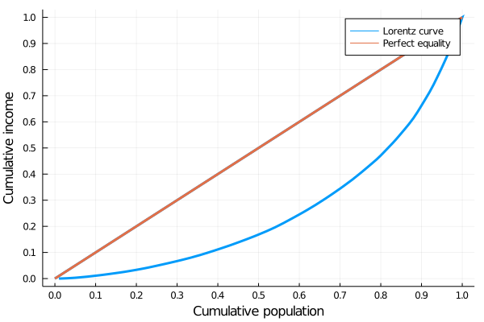

Chapter 10 Image classification
cd("./10_bees_vs_wasps/")
import Pkg
Pkg.activate(".")
using Images
using Plots
using ImageMagick #plot(load("10_bees_vs_wasps/images/venn.png"),axis=nothing)
plot(ImageMagick.load("10_bees_vs_wasps/images/venn.png"),axis=nothing,border=:none,size=(402,264))

Conv((3, 3), 1=>32, pad=(1,1), relu)Conv((3, 3), 1=>32, pad=(1,1), relu)